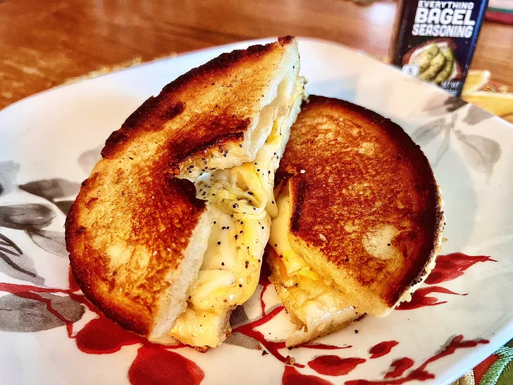

This everything bagel grilled cheese is taken to another level just by starting with an everything-seasoned bagel. It's perfectly crunchy on the outside, and really, any melty cheese will work.
Step 1
Preheat a skillet over medium heat. Slather 1/2 tablespoon mayonnaise on each cut side of bagel.
Step 2
Place 1 bagel half, mayonnaise side down, in the skillet. Place both slices of cheese on top; then place second bagel half, cut side up, on top of cheese.
Step 3
Press down on sandwich with a spatula, and cook until golden brown, 2 to 4 minutes. Flip sandwich over, press down, and cook until browned, 2 to 4 minutes more.